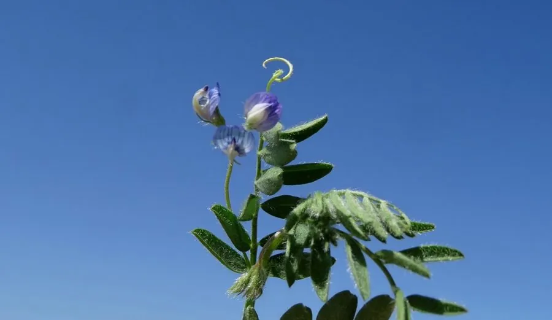

农作物与经济植物 · 植物界
兵豆 Lens culinaris

豆科兵豆属一年生草本，荚果扁小、籽粒扁圆如透镜，耐旱耐瘠，是地中海与南亚地区常见的食用豆类。
- 分类
- 门被子植物门纲木兰纲目豆目科豆科属兵豆属
- 栖息环境
- 温带与亚热带旱地，耐旱、耐瘠薄、生长期短
- 地理分布
- 原产中东与地中海地区；中国西北、华北有栽培，南亚、中东广泛种植
- 保护级别
- IUCN 暂无评估；栽培广泛，地方品种资源需保护
物种志
兵豆为一年生草本，高 20–60 厘米，茎直立或分枝，被细柔毛。叶为羽状复叶，小叶 3–7 对，长椭圆形，叶轴末端具卷须。花小，白色至淡蓝色，单生或 2–3 朵生于叶腋；荚果扁矩形，长 1–2 厘米，内含 1–2 粒种子，种子扁圆、形似透镜，颜色有黄、绿、红、黑等。
兵豆原产中东与地中海地区，是世界上最古老的栽培作物之一，在中国西北与华北有少量种植，耐旱、耐瘠薄、生长期短。它的籽粒富含蛋白质与铁，可煮汤、做豆泥或发芽食用，是南亚与中东饮食中的主食豆类；茎叶可作饲料。兵豆的固氮能力可改善土壤，常与小麦轮作。在印度，兵豆常被煮成浓汤（dal），是日常饮食的主角。
形态与习性
- 株高20–60 厘米，茎直立或分枝
- 花期5–6 月，花白色至淡蓝色
- 果期7–8 月，荚果扁矩形
- 光照喜光，长日照作物
- 水分耐旱，忌积水
- 土壤不择土壤，以疏松的壤土为佳
- 主要用途食用豆类、饲料与固氮轮作
趣味知识
- 兵豆的种子扁圆如透镜，英文名 Lentil 与“透镜”（lens）同源。
- 它是世界上最古老的栽培作物之一，距今已有上万年历史。
- 兵豆富含蛋白质与铁，是南亚与中东地区的重要主食豆类。
- 兵豆耐旱、生长期短，常与小麦轮作以恢复地力。